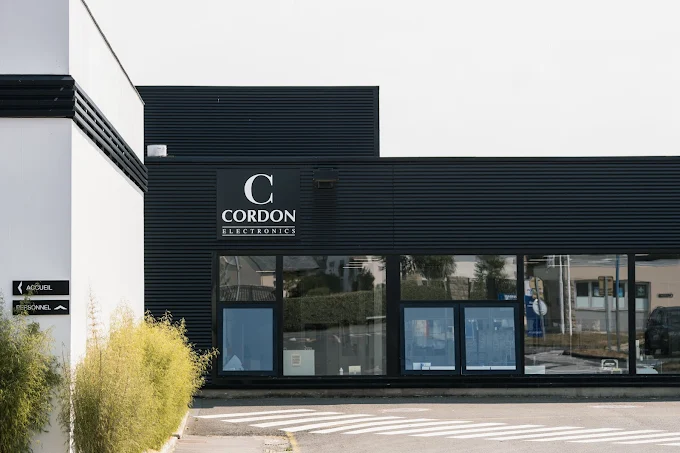

Support utilisateurs
Tickets GLPI : dépannage matériel et logiciel, droits d'accès au serveur de fichiers, licences, listes de distribution.

Acteur européen du SAV de produits électroniques et de l'économie circulaire. Le groupe suit un produit sur tout son cycle de vie : fabrication, logistique, réparation, reconditionnement et recyclage.
Création, à Dinan
Collaborateurs
Dans 13 pays
Chiffre d'affaires
Fondé par Serge Cordon, le groupe rassemble une dizaine de sociétés qui couvrent chacune une étape du traitement d'un produit électronique : smartphones, box internet, ordinateurs, terminaux de paiement, matériel médical…


Je travaille au siège social, à Quévert dans les Côtes-d'Armor. C'est le plus gros site du groupe : environ 900 collaborateurs répartis dans 8 bâtiments (production, administration, R&D).
Le parc compte environ 1 500 PC. Les postes de bureau sont entièrement gérés dans le cloud via Intune ; les postes de production sont en hybride, entre l'Active Directory local et Intune.
Tickets GLPI : dépannage matériel et logiciel, droits d'accès au serveur de fichiers, licences, listes de distribution.
Préparation des PC des nouveaux arrivants, migration des postes vers Windows 11 et migration de domaine avec synchronisation du tenant.
Création de comptes et de groupes, stratégies de groupe, administration des sites SharePoint.
Configuration de switchs Aruba, D-Link et Huawei, inventaire IP dans NetBox, supervision avec Zabbix.
Imprimantes réseau et imprimantes partagées en SMB via un serveur CUPS.
Diagnostic des agents dans la console SentinelOne, rattachement des postes au bon site.